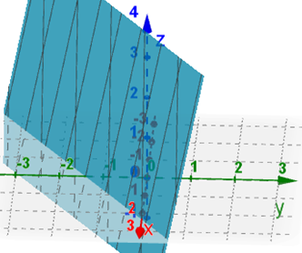
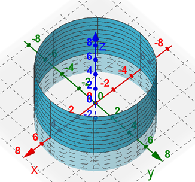
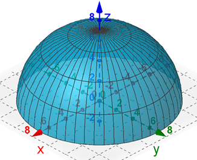

On this Page
Additional Reading
- Section 16.6
Surface Parameterization
In the Vector Fields and Line Integrals lesson, we looked at parameterizing curves, meaning we defined a curve \(C\) in \(ℝ^2\) using a vector parameterization \(\vec{r}(t) = \langle x(t),y(t) \rangle\) where \(x\) and \(y\) were continuous functions of \(t\). We now want to do the same thing with surfaces. We need to be able to express a surface \(S\) in \(ℝ^3\) using two parameters, \(u\) and \(v\). This can be done in several ways, depending on the type of surface.
Rectangular Parameterizations
For surfaces that can be expressed as \(z = g(x, y)\), we can use the parameterization \(x = u\), \(y = v\), and \(z = g(u, v)\). For example, consider the plane surface \(S\) given by \(3x - 5y + z = 7\). We can easily solve this for \(z\) to get \(z = 7 - 3x + 5y\). Then we could describe \(S\) using the parameterization \(\vec{r}(u, v) = \langle u,v,7 - 3u + 5v \rangle\).
We can graph these parameterized surfaces using GeoGebra 3D (new window) [https://www.geogebra.org/3d] using the following command.
Surface(<exp>, <exp>, <exp>, <var 1>, <start>, <end>, <var 2>, <start>, <end>)
For the above example, we would enter the expression surface(u, v, 7 - 3u + 5v, u, -5, 5, v, -5, 5) into the GeoGebra command line which will give the following graph. You can choose different start/end values for each variable.
Cylindrical Parameterizations
Surfaces that can be expressed using \(\sin^2 \theta + \cos^2 \theta = 1\), such as cylinders and cones, can be parameterized using cylindrical coordinates where \(u = \theta\) and \(v = z\). For example, consider the cylindrical surface \(S\) given by \(x^2 + y^2 = 25\). In the \(xy\)-plane, this is just a circle centered at the origin with radius 5, which we could parameterize as \(\vec{r}(t) = \langle 5\cos(t), 5\sin(t) \rangle \). However, this surface in space is a cylinder parallel to the \(z\)-axis with circular radius 5. So we could parameterize \(S\) as \(\vec{r}(u,v) = \langle 5\cos(u),5\sin(u), v \rangle\) where \(0 \le u \lt 2\pi\) and \(-\infty \lt v \lt \infty\). Notice that this is the same parameterization as the circle with an additional \(z\) component. Think of this as all the circles of radius 5 with a height \(v\) above the \(xy\)-plane. We could graph this using the GeoGebra command surface(5 cos(u), 5 sin(u), v, u, 0, 2π, v, -5, 5).
Spherical Parameterizations
Surfaces that can be expressed spherically can be parameterized using \(u = \phi\) and \(v = \theta\). For example, consider the surface \(S\) defined by \(x^2 + y^2 + z^2 = 49\) above the \(xy\)-plane. Then \(S\) is the hemisphere with radius 7 and \(z \ge 0\). In spherical coordinates, this would be all the points \((\rho, \phi, \theta)\) where \(\rho = 7\), \(0 \le \phi \le \pi/2\) and \(0 \le \theta \lt 2\pi\). We could parameterize \(S\) as \(\vec{r}(u,v) = \langle 7\sin(u)\cos(v), 7\sin(u)\sin(v), 7\cos(u) \rangle\) where \(0 \le u \le \pi/2\) and \(0 \le v \lt 2\pi\). Using the GeoGebra command surface(7 sin(u) cos(v), 7 sin(u) sin(v), 7 cos(u), u, 0, π/2, v, 0, 2π), we get the following graph.
The following vidoes gives a few more examples of how we can parameterize given surfaces.